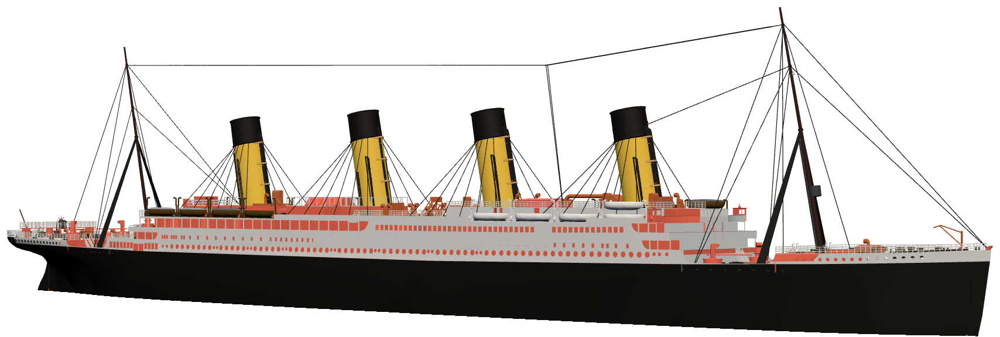

North Atlantic · 14 April 1912 · 41°46′N 50°14′W
R.M.S. TITANIC
The largest ship afloat is four days out of Southampton, steaming at 22 knots on a calm, moonless night.

Take the Helm
The iceberg is already in sight. Turn the wheel, signal the engine room, and decide what happens next.
Start the game 3D model · touch to exploreExplore the Ship
Turn the whole liner with one finger and tap the brass markers to see where the night went wrong.
Open the 3D ship Science · 5 minute readWhy She Floated
How 52,000 tonnes of steel stayed afloat, and why six flooded compartments were one too many.
Read and try itThe night, in order
- Lookout Frederick Fleet sights the iceberg
- Ice scrapes the starboard bow
- The first lifeboat is lowered
- Titanic sinks. About 1,500 lost, about 710 saved